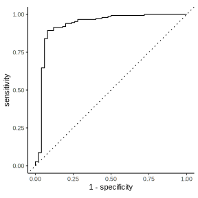

library(tidymodels)
library(dplyr)
set.seed(1)
sim_data2 <- tibble(
x1 = rnorm(200) + rep(c(2, -2, 0), c(100, 50, 50)),
x2 = rnorm(200) + rep(c(2, -2, 0), c(100, 50, 50)),
y = factor(rep(c(1, 2), c(150, 50)))
)
set.seed(2)
sim_data2_test <- tibble(
x1 = rnorm(200) + rep(c(2, -2, 0), c(100, 50, 50)),
x2 = rnorm(200) + rep(c(2, -2, 0), c(100, 50, 50)),
y = factor(rep(c(1, 2), c(150, 50)))
)Introduction to Statistical Learning with Tidy Models
The following example of Support Vector Machine is taken from Introduction to Statistical Learning: a great introductory book to Data Science by Gareth James, Daniela Witten, Trevor Hastie and Rob Tibshirani.
The original code is taken from ISLR tidymodels labs by Emil Hvitfeldt.
Simulating the Data
Fitting Support Vector Machine Model
svm_rbf_spec <- svm_rbf() |>
set_mode("classification") |>
set_engine("kernlab")
svm_rbf_fit <- svm_rbf_spec |>
fit(y ~ ., data = sim_data2)Performance Data
yardstick_roc <- augment(svm_rbf_fit, new_data = sim_data2_test) |>
roc_curve(truth = y, estimate = .pred_1)
yardstick_roc # A tibble: 202 × 3
.threshold specificity sensitivity
<dbl> <dbl> <dbl>
1 -Inf 0 1
2 0.0763 0 1
3 0.0799 0.0200 1
4 0.0854 0.0400 1
5 0.0961 0.0600 1
6 0.0991 0.0800 1
7 0.101 0.1 1
8 0.104 0.12 1
9 0.107 0.14 1
10 0.108 0.16 1
# ℹ 192 more rowslibrary(rtichoke)
svm_probs <- predict(svm_rbf_fit,
new_data = sim_data2_test,
type = 'prob') |>
pull(.pred_1)
svm_performance_data <- prepare_performance_data(
probs = list(svm_probs),
reals = list(sim_data2_test$y == 1)
)
svm_performance_data |>
select(probability_threshold, specificity, sensitivity)# A tibble: 101 × 3
probability_threshold specificity sensitivity
<dbl> <dbl> <dbl>
1 0 0 1
2 0.01 0 1
3 0.02 0 1
4 0.03 0 1
5 0.04 0 1
6 0.05 0 1
7 0.06 0 1
8 0.07 0 1
9 0.08 0.04 1
10 0.09 0.06 1
# ℹ 91 more rowsROC Curve
yardstick_roc |>
autoplot() +
theme_classic()
svm_performance_data |>
plot_roc_curve(size = 350)